บทนี้คือ "Ethernet รวมทุกแนวคิดของ Data Link Layer เข้าด้วยกัน" — framing, FCS (CRC-32), MAC address, การเข้าถึงสื่อ (CSMA/CD) และ switched forwarding ตามมาตรฐาน IEEE 802.3
เรียนประวัติ, Ethernet ใน OSI, วิวัฒนาการ 4 รุ่น, การไม่มี flow/error control, โครงสร้าง frame, ขนาด frame ต่ำสุด/สูงสุด, MAC address (unicast / multicast / broadcast), MAC vs IP, CSMA/CD กับ minimum frame, Fast/Gigabit Ethernet และการทำงานของ Ethernet switch (learning, forwarding, store-and-forward vs cut-through, Auto-MDIX)
ต่อจาก Lecture 5.0–6.1 และนำไปสู่ Lecture 7 (VLAN)
1. Ethernet คืออะไร
- data-link layer และ physical layer มี โปรโตคอลและเทคนิคมากมาย ใช้ใน LAN เป็นหลัก
- โปรโตคอลที่มากเกินไป สร้างปัญหาและความสับสนให้ผู้ใช้ (ยืดหยุ่นเกินไปเหมือน PC)
- จึงมีการกำหนด มาตรฐานโดยพฤตินัย (de facto standard) ชื่อ Ethernet ที่ใช้ง่ายและรองรับอินเทอร์เน็ต
- Ethernet ครอบคลุมทั้ง data-link layer และ physical layer ในมาตรฐานเดียว
History vs Today:
- ยุคเก่า: bus network (มี terminator สองปลาย), ring network, star network ที่ใช้ hub
- ปัจจุบัน: LAN แบบ star ที่ใช้ switch ต่อคอมพิวเตอร์ แล็ปท็อป เครื่องพิมพ์ และ router; home network ใช้ wireless router + Ethernet ด้วยสาย Cat 5 / Cat 6 ต่อ ISP ผ่าน ADSL, cable หรือ fibre
| History | Today |
|---|---|
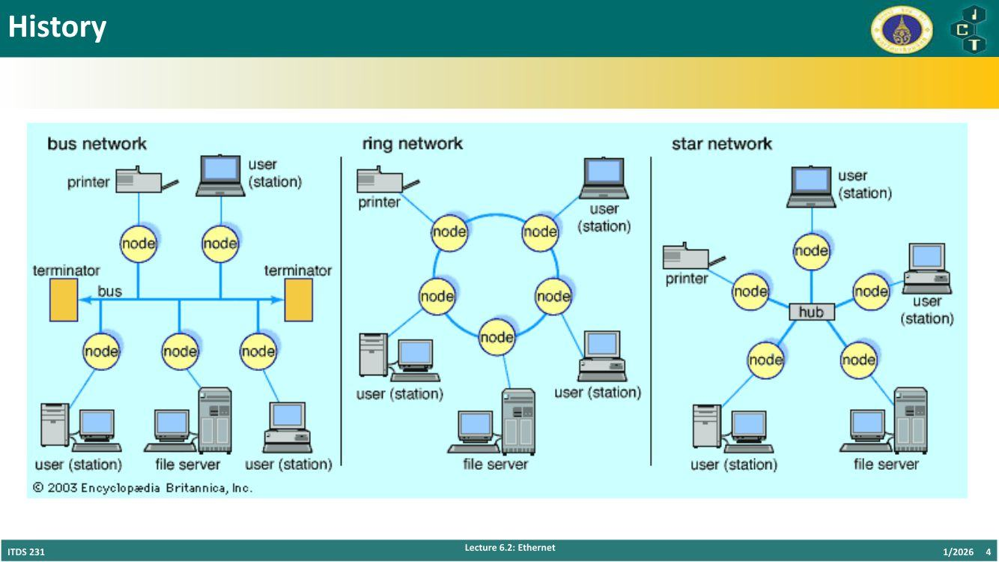 |
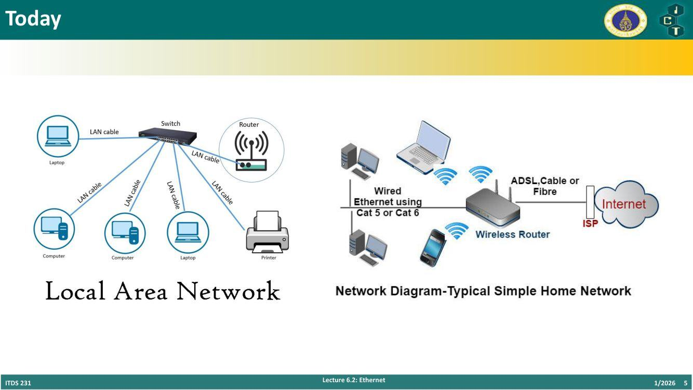 |
2. ประวัติและมาตรฐาน
2.1 ประวัติ Ethernet ⭐
| ปี | เหตุการณ์ |
|---|---|
| 1973–1974 | Ethernet ถูกพัฒนาที่ Xerox PARC ได้แรงบันดาลใจจาก ALOHAnet ซึ่ง Robert Metcalfe (พนักงาน Xerox) ศึกษาในวิทยานิพนธ์ปริญญาเอก |
| 1978 | Metcalfe ออกจาก Xerox ไปตั้ง 3Com (ภายหลังถูก HP ซื้อ) |
| — | Metcalfe ชักชวน DEC, Intel, Xerox ผลักดัน Ethernet เป็นมาตรฐาน (DIX) |
| — | ช่วงแรกแข่งกับ IBM Token Ring ที่แพง และโปรโตคอล proprietary อื่น ๆ |
| — | ปรับตัวตามตลาดด้วย 10BASE2 (thin coaxial ราคาถูก) |
| 1983 | Ethernet เป็นมาตรฐาน IEEE 802.3 สำหรับ LAN |
| 1990 | เปลี่ยนเป็น twisted pair ด้วย 10BASE-T (UTP) |
| 1995 เป็นต้นไป | ฆ่า Token Ring และโปรโตคอล proprietary อื่นในตลาด PC ได้อย่างสมบูรณ์ |
2.2 ทำไม Ethernet ชนะ
- วิวัฒนาการตามความต้องการความเร็วที่สูงขึ้นได้ — LAN อื่นหายไปจากตลาดเกือบหมด
- เปิดให้ทุกคน: ใครก็ผลิตอุปกรณ์ Ethernet ได้ ตราบใดที่ทำตาม IEEE 802.3
- ราคาถูกกว่า เทคโนโลยีคู่แข่ง
- ใช้โดยคนหลายพันล้านคนทั่วโลก
3. IEEE Project 802 และ Ethernet ใน OSI
3.1 IEEE Project 802
Project 802 เริ่มขึ้นเพื่อ รวมหน้าที่และข้อกำหนดของ physical และ data-link layer ของ LAN หลัก ๆ เพราะ:
- ตอนนั้น มีโปรโตคอลมากเกินไป (มีเทคโนโลยีแข่งขันกันเยอะ)
- physical layer กับ data-link layer ต้องทำงานใกล้ชิดกัน
โครงสร้าง IEEE Standard เทียบกับ OSI:
- Data-link layer แบ่งเป็น LLC (ร่วมกัน) + MAC เฉพาะเทคโนโลยี (Ethernet MAC, Token Ring MAC, Token Bus MAC, …)
- Physical layer แยกตามเทคโนโลยี (Ethernet physical layer, Token Ring physical layer, …)
- ⚠️ LLC ไม่ได้เป็นส่วนหนึ่งของ Ethernet
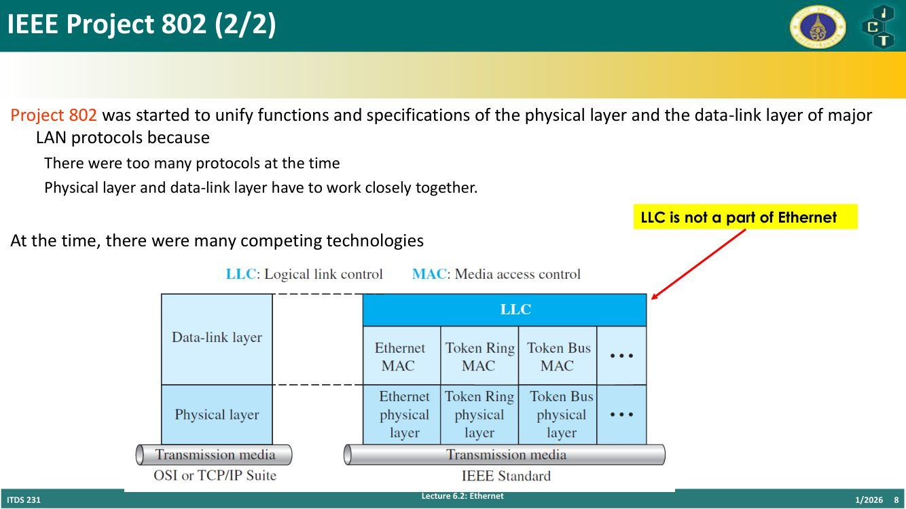
3.2 Ethernet ใน OSI Model
- Ethernet == IEEE 802.3 — กำหนดโดยโปรโตคอลชั้น data link (MAC) และ physical
- LLC = IEEE 802.2
- LLC sublayer จัดการการสื่อสารระหว่าง ชั้นบนกับชั้นล่าง (ระหว่าง networking software กับ device hardware)
- LLC รับข้อมูลโปรโตคอลเครือข่าย (มักเป็น IPv4 packet) แล้ว เพิ่ม control information ช่วยส่ง packet ถึงโหนดปลายทาง
- LLC ใช้สื่อสารกับชั้นบน และส่งต่อ packet ลงชั้นล่างเพื่อจัดส่ง
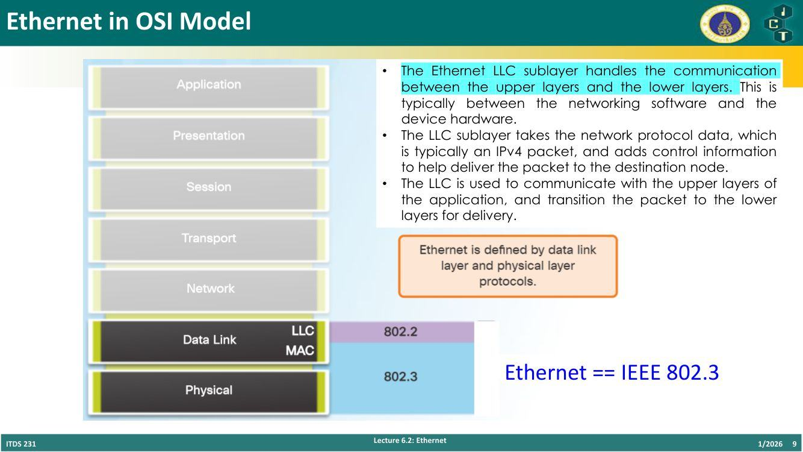
4. วิวัฒนาการ Ethernet 4 รุ่น ⭐
| รุ่น | ความเร็ว | การเข้าถึงสื่อ |
|---|---|---|
| Standard Ethernet | 10 Mbps | ใช้ CSMA/CD (bus หรือ hub) |
| Fast Ethernet | 100 Mbps | CSMA/CD เป็น optional (เฉพาะเมื่อใช้ hub) |
| Gigabit Ethernet | 1 Gbps | ไม่ใช้ CSMA/CD (ใช้ switch) |
| 10 Gigabit Ethernet | 10 Gbps | ไม่ใช้ CSMA/CD (ใช้ switch) |
- ปัจจุบัน Ethernet รองรับ 40 Gbps และ 100 Gbps
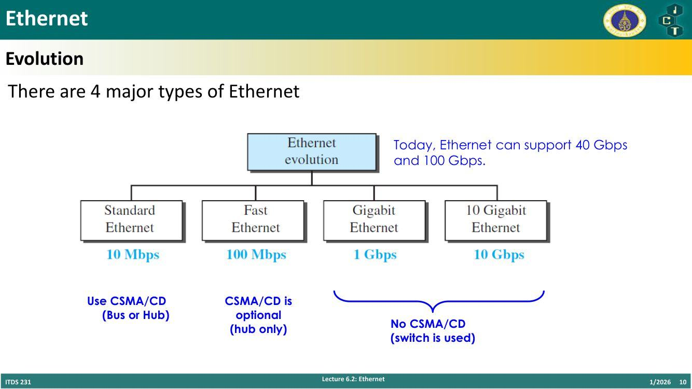
5. Flow Control และ Error Control ของ Ethernet ⭐
5.1 Flow Control — Ethernet ไม่มี
- Ethernet ให้บริการแบบ connectionless
- แต่ละ frame อิสระ จาก frame ก่อนหน้าและถัดไป
- ไม่มีขั้นตอนสร้างหรือปิด connection
- เพราะ Ethernet ไม่มี LLC ผู้ส่งจะส่ง frame ทันทีที่มี ผู้รับอาจพร้อมหรือไม่พร้อม
- ผู้ส่งอาจส่งท่วมผู้รับ → frame ถูกทิ้ง และ ผู้ส่งไม่รู้
- ต้องพึ่ง โปรโตคอลชั้นสูง เช่น TCP จัดการ frame drop ด้วย flow control ที่ transport layer
- IP (layer 3) ที่ใช้บริการ Ethernet ก็ connectionless → ไม่รู้ว่า frame หาย
- ถ้า transport เป็น UDP (connectionless) → frame หายไปเลย ต้องพึ่ง application layer
- ถ้า transport เป็น TCP → ผู้ส่งไม่ได้ ACK ของ segment → ส่งใหม่
5.2 Error Control
- Ethernet ไม่มี LLC (flow control) → unreliable เหมือน IP และ UDP
- ตามหลักการ data link layer ควรรับผิดชอบ flow control แต่ ในทางปฏิบัติส่วนใหญ่ใช้ Ethernet โดยไม่มี flow control แล้วปล่อยให้ transport layer จัดการ เพื่อความเร็ว
- Ethernet มี CRC-32 ตรวจ error ของ frame
- ถ้า frame เสียระหว่างทางและผู้รับตรวจพบด้วย CRC-32 → ทิ้ง frame เงียบ ๆ (drop silently)
- เป็นหน้าที่ของโปรโตคอลชั้นสูงที่จะตรวจพบและแก้ไข (ด้วย transport layer)
💡 สรุป: Ethernet ตรวจ error ได้ (CRC-32) แต่ไม่แก้และไม่แจ้ง — ทิ้งเงียบ ๆ แล้วให้ TCP ส่งใหม่
6. Ethernet Frame Format ⭐⭐
| Preamble | SFD | Destination address | Source address | Type | Data and padding | CRC |
|---|---|---|---|---|---|---|
| 7 bytes | 1 byte | 6 bytes | 6 bytes | 2 bytes | 46–1500 bytes | 4 bytes |
| ← physical-layer header → |
| Field | ขนาด | หน้าที่ |
|---|---|---|
| Preamble | 7 bytes (56 bits) | บิต 0 และ 1 สลับกัน เตือนผู้รับว่า frame กำลังมา และให้ synchronize clock — เพิ่มที่ physical layer ไม่ได้เป็นส่วนของ frame อย่างเป็นทางการ |
| SFD (Start Frame Delimiter) | 1 byte = 10101011 | บอก จุดเริ่มต้นของ frame; เตือนว่าเป็น โอกาสสุดท้ายในการ synchronize; จริง ๆ คือ flag; เพิ่มที่ physical layer |
| Destination address (DA) | 6 bytes (48 bits) | link-layer address ของสถานีปลายทาง (1 หรือหลายสถานี) |
| Source address (SA) | 6 bytes | link-layer address ของผู้ส่ง |
| Type | 2 bytes | ระบุ โปรโตคอลชั้นบน ที่ถูกห่อใน frame เช่น IP, ARP, OSPF |
| Data | 46–1500 bytes | ข้อมูลจากชั้นบน; ต้องมีความยาวขั้นต่ำเพราะ CSMA/CD ต้องฟัง frame ที่เข้ามา; ถ้าข้อมูลสั้นเกิน ใส่ 0-padding |
| CRC | 4 bytes | CRC-32 ตรวจ error — คำนวณจาก addresses, type และ data |
- Minimum frame length: 512 bits หรือ 64 bytes; Maximum frame length: 12,144 bits หรือ 1518 bytes (ไม่นับ preamble และ SFD)
| Framing (1/2): Preamble, SFD | Framing (2/2): DA, SA, Type, Data, CRC |
|---|---|
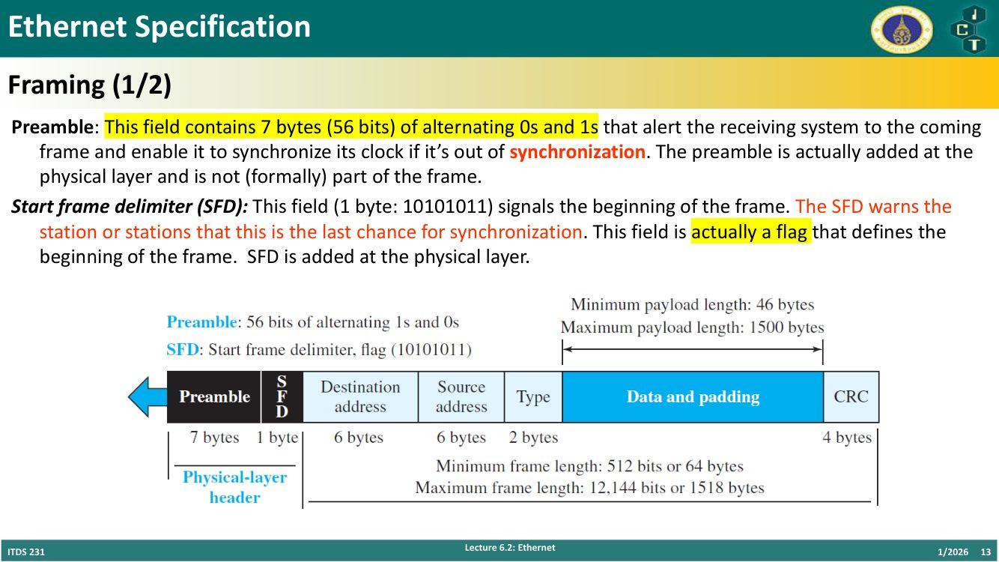 |
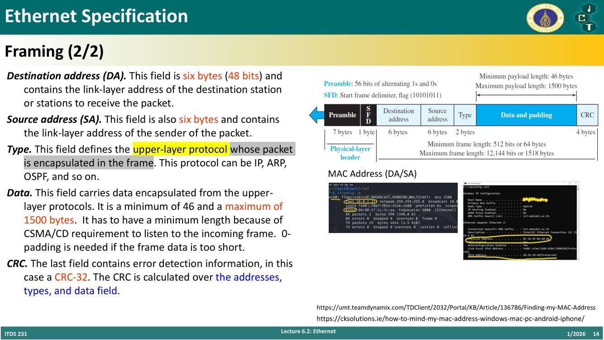 |
⚠️ Wireshark ปกติ ไม่แสดง preamble, SFD และ FCS (Lecture 5.0)
7. Frame Length ⭐
7.1 Minimum = 64 bytes
- frame ต้องยาว อย่างน้อย 512 bits (64 bytes) เพื่อรองรับ CSMA/CD
- header + trailer = 18 bytes (6 source + 6 destination + 2 type/length + 4 CRC)
- ข้อมูลขั้นต่ำจากชั้นบน = 64 − 18 = 46 bytes
7.2 Maximum = 1518 bytes
- มาตรฐานกำหนด frame ยาวสุด 1518 bytes (ไม่รวม preamble, SFD)
- ลบ 18 bytes → payload สูงสุด 1500 bytes เพราะ:
- สมัยออกแบบ Ethernet หน่วยความจำแพงมาก → จำกัดความยาวช่วยลดขนาด buffer
- จำกัดความยาว ป้องกันสถานีเดียวผูกขาดสื่อกลางที่แชร์ จนสถานีอื่นส่งไม่ได้
| frame | payload | |
|---|---|---|
| ต่ำสุด | 64 bytes (512 bits) | 46 bytes |
| สูงสุด | 1518 bytes (12,144 bits) | 1500 bytes |
8. MAC Address ⭐
8.1 Addressing
- ทุกสถานี (PC, workstation, printer) มี NIC (Network Interface Card) ของตัวเอง ซึ่งให้ link-layer address
- Ethernet address = 6 bytes (48 bits) เขียนเป็น เลขฐาน 16 คั่นด้วย colon เช่น
4A:30:10:21:10:1A - 24 บิตแรก = OUI (Organizationally Unique Identifier) กำหนดโดย IEEE ให้ผู้ผลิต
- 24 บิตหลัง = กำหนดโดย ผู้ผลิต (vendor)
- ⚠️ MAC ซ้ำกันได้ จากความผิดพลาดตอนผลิต หรือบางวิธีของ virtual machine → ต้องเปลี่ยน NIC หรือแก้ในซอฟต์แวร์
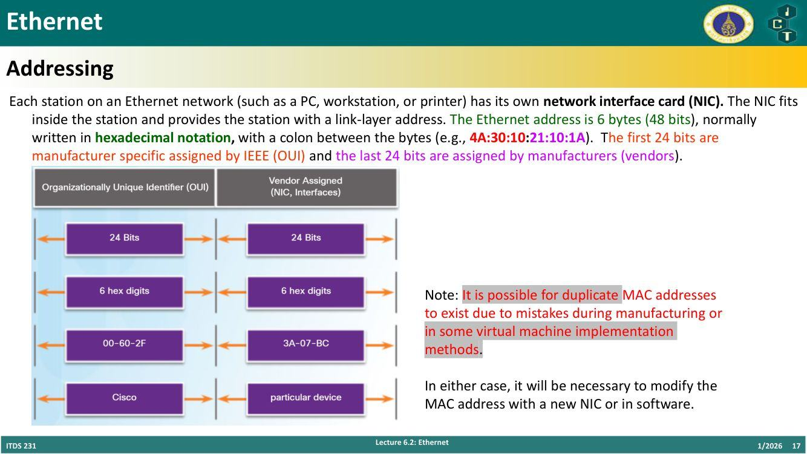
8.2 การส่ง address บนสาย
- วิธีส่ง address จริง ต่างจากวิธีเขียน เป็นฐาน 16
- ส่ง ซ้ายไปขวา ทีละไบต์
- แต่ ในแต่ละไบต์ ส่งบิตที่มีนัยสำคัญน้อยที่สุด (LSB) ก่อน และ MSB ทีหลัง
- ผลคือ บิตที่บอกว่าเป็น unicast หรือ multicast มาถึงผู้รับก่อน → ผู้รับรู้ทันที
- บิตนั้น (LSB ของไบต์แรก): Unicast = 0, Multicast = 1
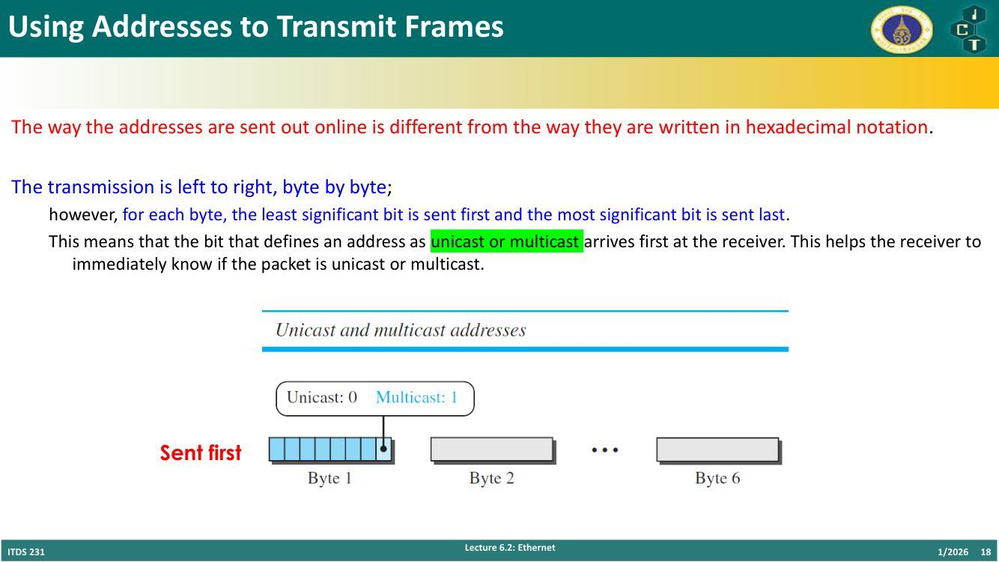
8.3 ชนิดของ MAC address ⭐⭐
วิธีดู: ดู เลขฐาน 16 หลักที่ 2 จากซ้าย
- เลขคู่ → unicast
- เลขคี่ → multicast
- F ทั้งหมด → broadcast
Example 13.2:
| Address | หลักที่ 2 | ชนิด |
|---|---|---|
a. 4A:30:10:21:10:1A |
A = 1010 (คู่) | Unicast |
b. 47:20:1B:2E:08:EE |
7 = 0111 (คี่) | Multicast |
c. FF:FF:FF:FF:FF:FF |
ทั้งหมดเป็น F | Broadcast |
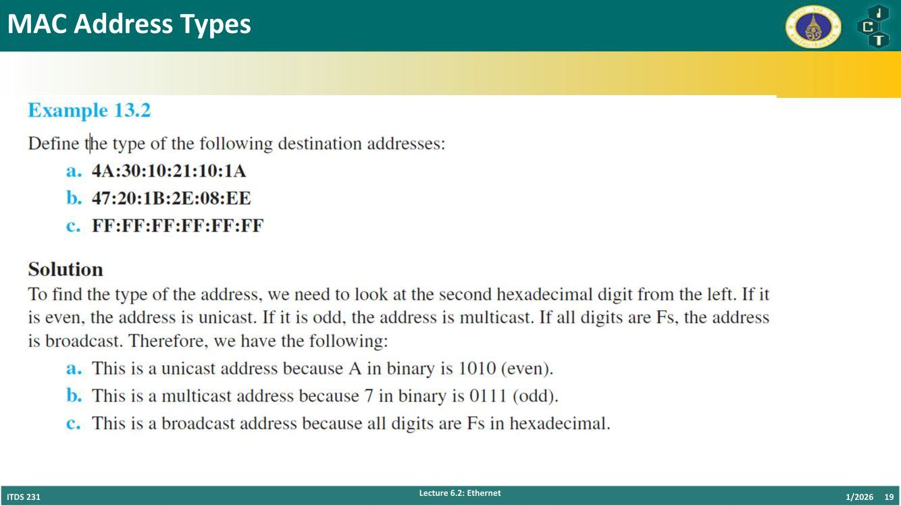
💡 ทำไมดูหลักที่ 2? เพราะหลักที่ 2 คือ 4 บิตล่างของไบต์แรก บิตขวาสุด (LSB) ของมันเป็นตัวบอก unicast/multicast — เลขคู่ LSB = 0, เลขคี่ LSB = 1
9. Unicast / Multicast / Broadcast ⭐
9.1 บน shared medium (Standard Ethernet)
Standard Ethernet เป็นสื่อแชร์ ทุกการส่งถูก broadcast อยู่แล้ว ต่างกันที่ผู้รับทำอะไร:
| ชนิด | ใครได้รับ | ใครเก็บไว้ประมวลผล |
|---|---|---|
| Unicast | ทุกสถานี | เฉพาะผู้รับที่ตั้งใจ; ที่เหลือทิ้ง |
| Multicast | ทุกสถานี | เฉพาะสมาชิกของกลุ่ม; ที่เหลือทิ้ง |
| Broadcast | ทุกสถานี (ยกเว้นผู้ส่ง) | ทุกสถานี (ยกเว้นผู้ส่ง) |
9.2 ตัวอย่าง frame
| ชนิด | Dest MAC | Source MAC | Source IP | Dest IP |
|---|---|---|---|---|
| Unicast | 00-07-E9-42-AC-28 (server) | 00-07-E9-63-CE-53 | 192.168.1.5 | 192.168.1.200 |
| Broadcast | FF-FF-FF-FF-FF-FF | 00-07-E9-63-CE-53 | 192.168.1.5 | 192.168.1.255 |
| Multicast | 01-00-5E-00-00-C8 | 00-07-E9-63-CE-53 | 192.168.1.5 | 224.0.0.200 |
- Unicast: ใช้ unicast IP และ MAC ปลายทางส่ง packet ไปเครื่องเดียว
- Broadcast: ใช้ broadcast IP และ broadcast MAC ส่งถึงทุก host ในเครือข่าย
- Multicast: ใช้ multicast IP และ MAC ส่งถึงกลุ่ม host ที่เป็นสมาชิก
| Unicast | Broadcast | Multicast |
|---|---|---|
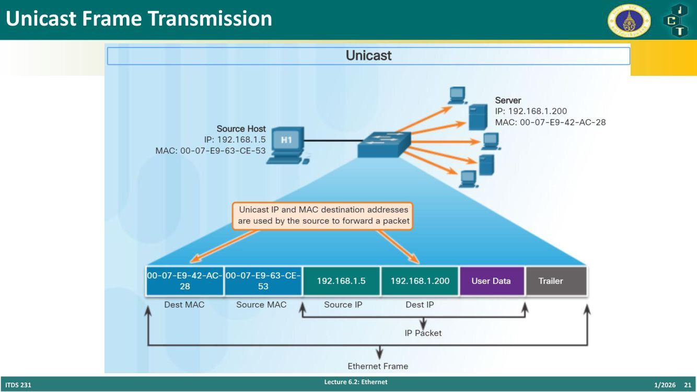 |
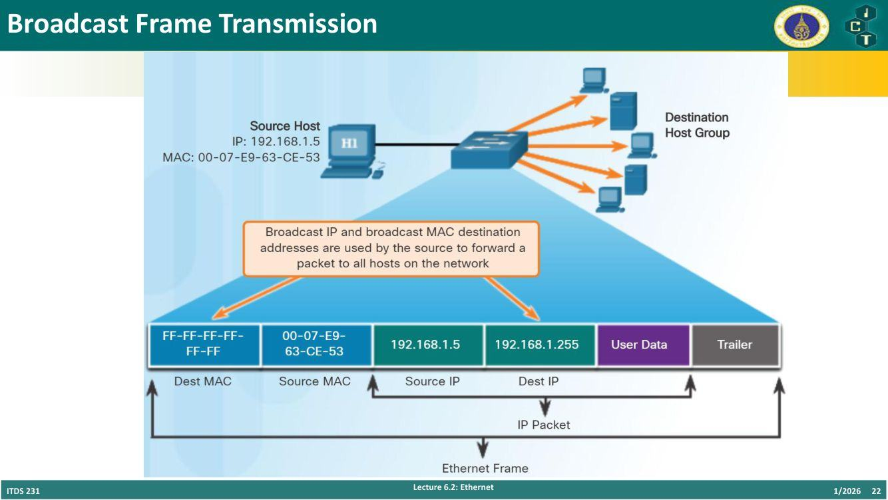 |
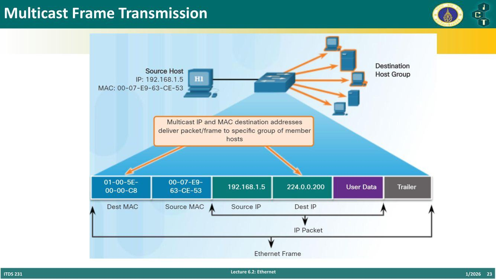 |
9.3 รายละเอียด Broadcast และ Multicast
Broadcast
- มักใช้กับโปรโตคอลที่ต้อง broadcast เพื่อหาข้อมูล เช่น DHCP และ ARP
Multicast
- IPv4 multicast: 224.0.0.0 ถึง 239.255.255.255
- IPv6 multicast: ขึ้นต้นด้วย FF00::/8
- multicast address แทน กลุ่ม (host group) → ใช้ได้ เฉพาะเป็น destination — source เป็น unicast เสมอ
- host สมัครเข้ากลุ่มด้วย IGMP (ไม่อยู่ในวิชานี้)
- ช่วยผู้ส่ง ลดจำนวน frame ที่ต้องส่ง — router/switch ช่วยทำสำเนาและส่งออกพอร์ต
- ใช้ใน เกมออนไลน์หลายผู้เล่น และ distance learning ผ่าน video conference
- multicast IP ต้องมี multicast MAC ที่สอดคล้องกัน เพื่อส่ง frame ในเครือข่ายท้องถิ่นจริง
10. MAC Address vs IP Address ⭐⭐
- MAC address ใช้ route และ forward frames
- IP address ใช้ route และ forward packets
- IP ต้นทางและปลายทางใน header ไม่เปลี่ยน แต่ MAC address จะเปลี่ยนทุก hop!
ตัวอย่าง: Computer A → Router B → Router C → Server D
| ช่วง | MAC | IP |
|---|---|---|
| A → B | From A, To B | From A, To D |
| B → C | From B, To C | From A, To D |
| C → D | From C, To D | From A, To D |
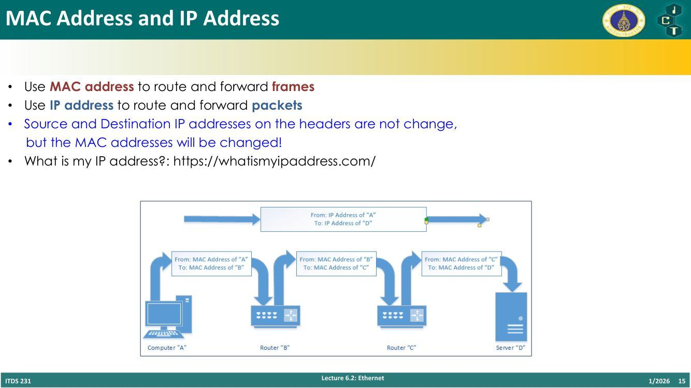
ลองดู IP ของตัวเอง: https://whatismyipaddress.com/
10.1 Communicating on a Local Network
A (192.168.1.110, MAC 00-0A) ส่งถึง File Server (192.168.1.50, MAC 00-0B) ในเครือข่ายเดียวกัน
- Destination MAC = 00-0B (ของ server โดยตรง)
- Source MAC = 00-0A, Source IP = 192.168.1.110, Destination IP = 192.168.1.50
10.2 Communicating on a Remote Network
A (192.168.1.110, MAC 00-0A) ส่งถึง File Server (172.16.1.99) อยู่คนละเครือข่าย (ผ่าน R1 และ R2)
- Destination MAC = 00-0C (NIC ของ router R1 = default gateway)
- Destination IP = 172.16.1.99 (ปลายทางจริง)
| Local Network | Remote Network |
|---|---|
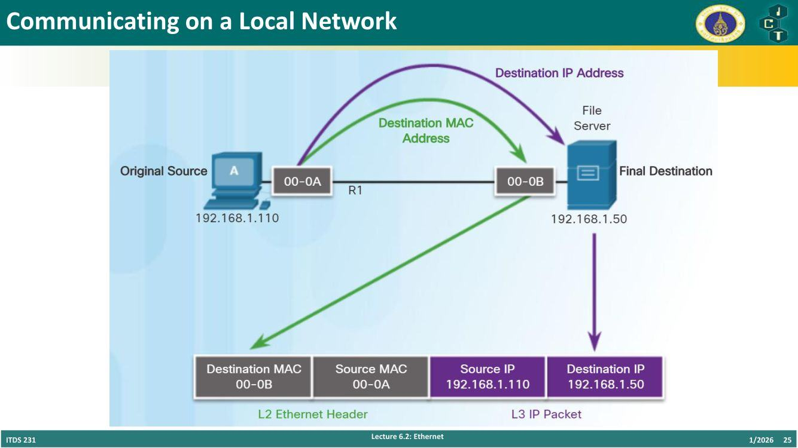 |
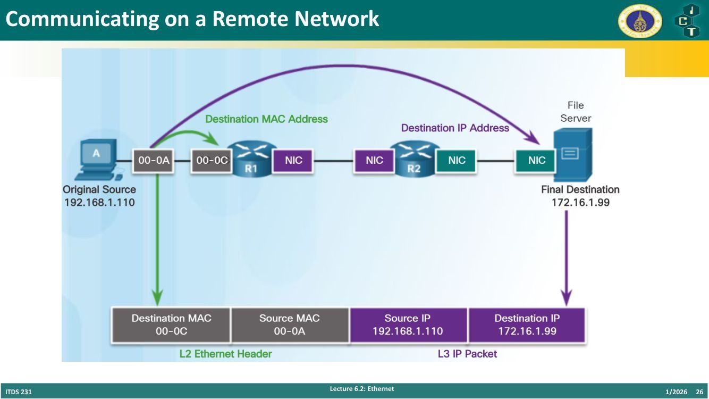 |
💡 IP = ที่อยู่ปลายทางบนซองจดหมาย (ไม่เปลี่ยนตลอดทาง) / MAC = ชื่อคนส่งต่อคนถัดไป (เปลี่ยนทุกช่วง)
11. Standard Ethernet: Access Method (CSMA/CD) ⭐
- เฉพาะ Standard Ethernet ที่ต้องใช้ CSMA/CD
- เลือก CSMA/CD แบบ 1-persistent — ผู้ส่ง ฟังต่อระหว่างส่ง
- สถานีส่ง frame ขนาดต่ำสุด 64 bytes (512 bits)
เหตุผลของ 512 bits:
- Ethernet 10 Mbps → ส่ง 512 bits ใช้ 512 / (10 Mbps) = 51.2 µs
- ความเร็วสัญญาณในสาย 2 × 10⁸ m/s → บิตแรกไปได้ 10,240 m (ขาเดียว) หรือ 5,120 m (ไป-กลับ)
- ถ้าจะเกิด collision ต้องเกิดก่อนผู้ส่งส่งครบ 512 bits (worst case) และบิตแรกเดินทางไป-กลับ 5,120 m
- ในทางปฏิบัติ ความยาวสายสูงสุด 2,500 m เพื่อชดเชย delay ในสื่อ
💡 ถ้า frame สั้นเกินไป ผู้ส่งจะส่งจบก่อนที่สัญญาณชนจะย้อนกลับมา → ไม่รู้ว่าชน จึงต้องบังคับ minimum frame size
12. Switched, Fast และ Gigabit Ethernet
12.1 Switched Ethernet ⭐
- Ethernet switch สร้าง collision domain แยกให้แต่ละพอร์ต
- บน full-duplex point-to-point link ทั้งสองฝั่งส่งพร้อมกันได้ → ไม่มี collision และไม่ใช้ CSMA/CD
- Half-duplex shared Ethernet ยังเกิด collision ได้ แต่ ถือเป็นเทคโนโลยีเก่า (legacy) แล้ว
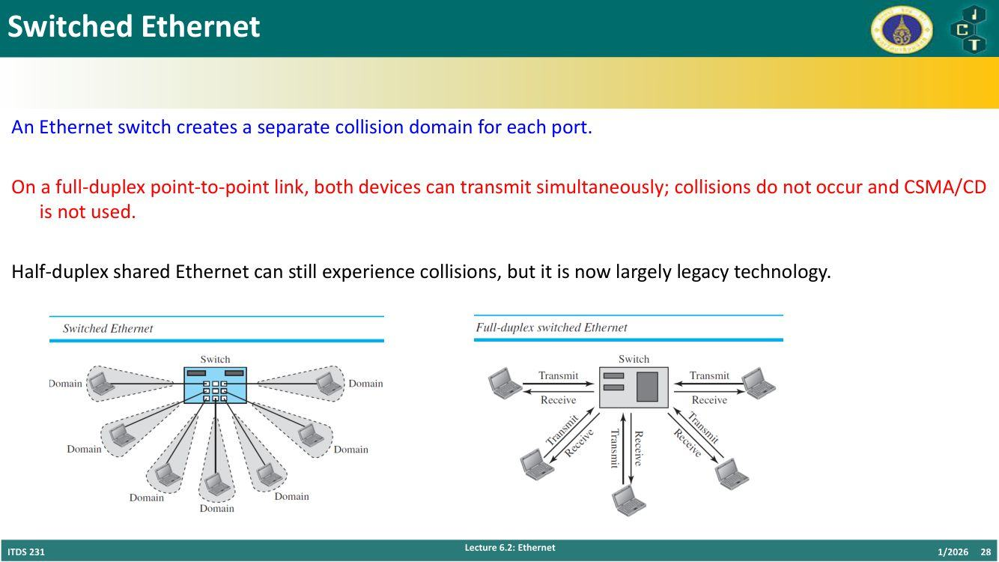
12.2 Fast Ethernet (100 Mbps)
Hub-based Fast Ethernet
- minimum frame ยัง 64 bytes แต่ส่ง เร็วขึ้น 10 เท่า
- ด้วย CSMA/CD ความยาวสายสูงสุดลดจาก 2,500 m เหลือ 250 m — ในทางปฏิบัติใช้ 100 m
Switched Fast Ethernet
- ไม่ต้องใช้ CSMA/CD
- switch รับ frame เก็บใน buffer (queue) → ตรวจ destination address → ส่งออกพอร์ตที่ตรง
- การเชื่อมต่อกับ switch เป็น full-duplex → ปลายทางส่ง frame ไปหาเครื่องอื่นได้ขณะกำลังรับ frame
- สื่อที่แชร์เปลี่ยนเป็น point-to-point หลายเส้น → ไม่ต้องแข่งขัน
Backward Compatibility
- เมื่อ LAN 10 Mbps เชื่อม (ผ่าน switch หรือ hub) กับ LAN 100 Mbps → Fast Ethernet มี autonegotiation ให้อุปกรณ์ตกลงความเร็วกัน (มักใช้ ตัวที่ช้ากว่า)
12.3 Gigabit Ethernet ⭐
- ออกแบบใหม่ทั้งหมด → IEEE 802.3z
- ความเร็ว 1 Gbps
- ใช้ร่วมกับ Standard และ Fast Ethernet ได้ ด้วย autonegotiation
- ใช้ framing specification เดิม
- เพิ่ม minimum frame เป็น 512 bytes (4096 bits) จาก 64 bytes (512 bits) → เรียกว่า Carrier Extension
- ไม่มี collision เพราะใช้ switch และ full-duplex — ไม่มี Gigabit Ethernet hub
- ถ้า frame ไม่ถึง 512 bytes → ใส่ padding
- แต่ รวมหลาย frame เป็น frame ใหญ่ ได้ → เรียกว่า Frame Bursting
Physical layer:
| Implementation | Medium | Medium length | Wires | Encoding |
|---|---|---|---|---|
| 1000Base-SX | Fiber S-W (short-wave) | 550 m | 2 | 8B/10B + NRZ |
| 1000Base-LX | Fiber L-W (long-wave) | 5000 m | 2 | 8B/10B + NRZ |
| 1000Base-CX | STP | 25 m | 2 | 8B/10B + NRZ |
| 1000Base-T4 | UTP | 100 m | 4 | 4D-PAM5 |
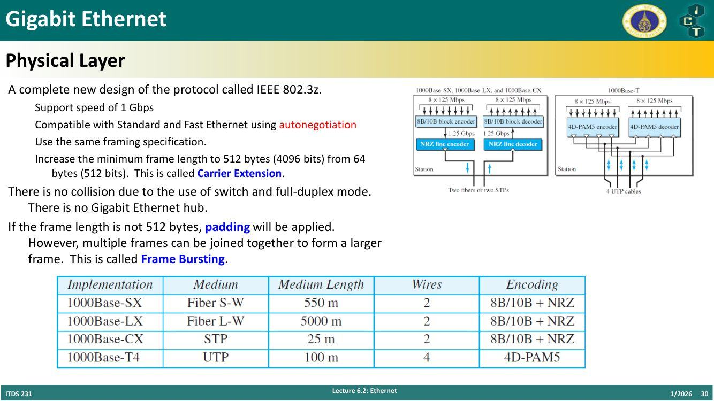
12.4 Summary of Standards (Physical Layer)
- Data link layer: Logical Link Control Sublayer + 802.3 Media Access Control
- Physical layer: Physical Signaling Sublayer + Physical Medium
| Standard | สื่อและระยะ |
|---|---|
| 10BASE-5 | Coax N-Style, 50 Ohm, 500 m |
| 10BASE-2 | Coax BNC, 50 Ohm, 185 m |
| 10BASE-T | UTP RJ-45, 100 Ohm, 100 m |
| 100BASE-TX | UTP RJ-45, 100 Ohm, 100 m |
| 1000BASE-CX | STP mini-DB-9, 150 Ohm, 25 m |
| 1000BASE-T | UTP RJ-45, 100 Ohm, 100 m |
| 1000BASE-ST | MM Fiber SC, 220–550 m |
| 1000BASE-LX | MM or SM Fiber SC, 550–5000 m |
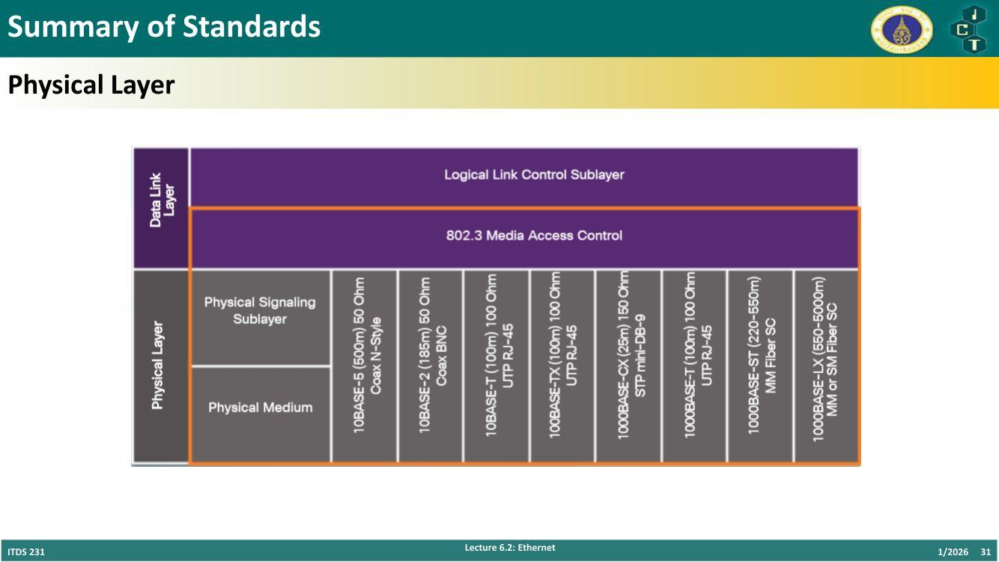
💡 อ่านชื่อ: 10BASE-T = 10 Mbps, BASEband, Twisted pair / 10BASE-5 = สายยาวได้ 500 m / 10BASE-2 = ~200 m (จริง 185 m)
13. Ethernet Switch ⭐⭐
13.1 Learning MAC address
วิดีโอ Hub and Switch operation: https://www.youtube.com/watch?v=eMamgWllRFY
- switch สร้าง MAC address table แบบ dynamic โดยดู source MAC address ของ frame ที่เข้ามาแต่ละพอร์ต
- ถ้า source MAC ยังไม่มี ในตาราง → เพิ่มพร้อมหมายเลขพอร์ตขาเข้า
- ส่วนใหญ่ เก็บ entry ไว้ 5 นาที
- ถ้า source MAC มีอยู่แล้วแต่คนละพอร์ต → ถือเป็น entry ใหม่ → แทนที่ด้วยพอร์ตล่าสุด
ตัวอย่าง: A (MAC 00-0A) ส่ง frame เข้าพอร์ต 1 → switch: "ฉันไม่มี source MAC และพอร์ตนี้ในตาราง จะเพิ่มให้" → ตาราง: Port 1 = 00-0A
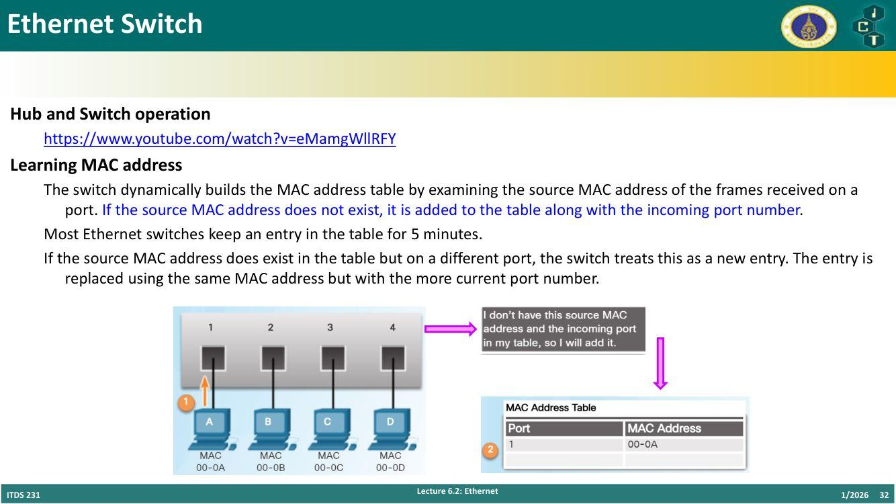
13.2 Forwarding ⭐
switch ส่งต่อ frame โดย หา destination MAC ใน MAC address table:
| กรณี | switch ทำอะไร | ชื่อเรียก |
|---|---|---|
| destination MAC อยู่ในตาราง | ส่งออก พอร์ตที่ระบุ เท่านั้น | frame filtering |
| destination MAC ไม่อยู่ในตาราง | ส่งออก ทุกพอร์ตยกเว้นพอร์ตขาเข้า | unknown unicast (flooding) |
| destination เป็น broadcast หรือ multicast | flood ออกทุกพอร์ตยกเว้นพอร์ตขาเข้า |
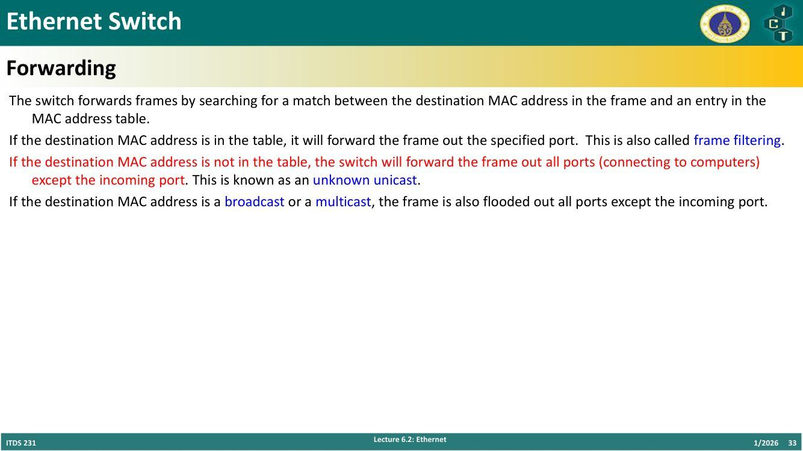
13.3 Connected Switches
- 1 พอร์ตมีหลาย MAC address ได้ — เกิดบ่อยเมื่อ switch ต่อกับ switch อื่น
- switch มี entry แยกสำหรับแต่ละ source MAC ที่ได้รับ
- ตัวอย่าง: A (00-0A), B (00-0B) ต่อ S1; C (00-0C) ต่อ S2; S2 ต่อ Router (00-0D) → ใน S2 พอร์ตที่ต่อ S1 จะเรียนรู้ทั้ง 00-0A และ 00-0B
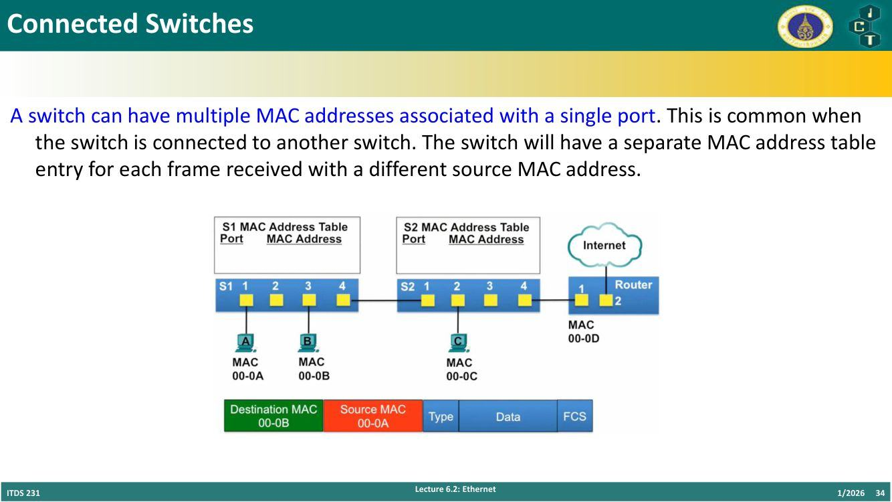
13.4 Sending Frame outside LAN
- ถ้าอุปกรณ์มี IP ปลายทางอยู่ คนละเครือข่าย จะส่ง Ethernet frame ตรงไปหาปลายทางไม่ได้
- ต้องส่ง frame ไปที่ MAC address ของ default gateway (router) แทน
- อุปกรณ์รู้ MAC ของ default gateway ผ่าน DHCP (ตามสไลด์)
- ตัวอย่าง: A ส่งไปอินเทอร์เน็ต → Destination MAC = 00-0D (router), Source MAC = 00-0A, Data มี destination IP ของเครือข่ายภายนอก
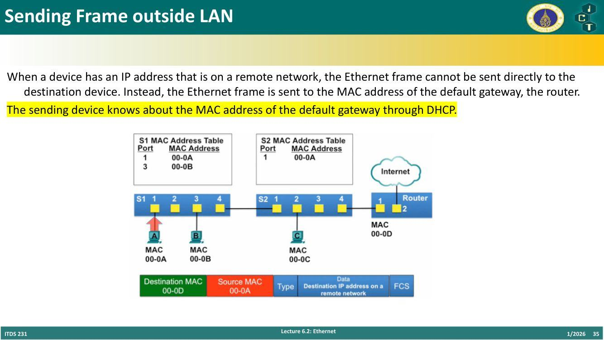
13.5 แบบฝึก: switch ทำอะไรในแต่ละสถานการณ์? ⭐
| สถานการณ์ | switch ทำอะไร |
|---|---|
| ได้ frame จาก source MAC ที่ไม่อยู่ในตาราง | เพิ่ม source MAC ลงตาราง พร้อมพอร์ตที่เกี่ยวข้อง |
| ได้ frame ที่ destination MAC อยู่ในตาราง | ส่งต่อไปยังพอร์ต ของ destination นั้น |
| ได้ frame ที่ destination MAC ไม่อยู่ในตาราง | broadcast (flood) ไปทุกพอร์ตที่ up ยกเว้นพอร์ตขาเข้า |
| ได้ frame ที่ destination เป็น broadcast address | broadcast ไปทุกพอร์ตที่ up ยกเว้นพอร์ตขาเข้า |
💡 จำ: Learn จาก source, Forward ตาม destination
14. ประเภทของ Ethernet Switch และ Auto-MDIX
14.1 Store-and-forward vs Cut-through ⭐
| Store-and-forward switch | Cut-through switch | |
|---|---|---|
| วิธีทำงาน | รับ frame ทั้งหมด → ตรวจ CRC → ดู destination → ส่งต่อ ถ้า CRC ถูก | ส่งต่อก่อนรับครบ โดยดู destination address ก่อน |
| ความเร็ว | ช้ากว่า | เร็วกว่า |
| ตรวจ error | ✅ | ❌ (หรือบางส่วน) |
| QoS | จำเป็นสำหรับ QoS (ต้องรู้ชนิด frame เพื่อให้บริการพิเศษ) | เหมาะกับงานที่ ไม่ต้องการ QoS |
Cut-through มี 2 แบบ:
- Fast forwarding switch — แบบพื้นฐาน (ดู destination แล้วส่งเลย)
- Fragment-free switch — ตรวจ 64 bytes แรก ก่อนส่ง (เพราะ collision ตาม CSMA/CD มักเกิดใน 64 bytes แรก — frame ที่สั้นกว่านั้นคือเศษจากการชน)
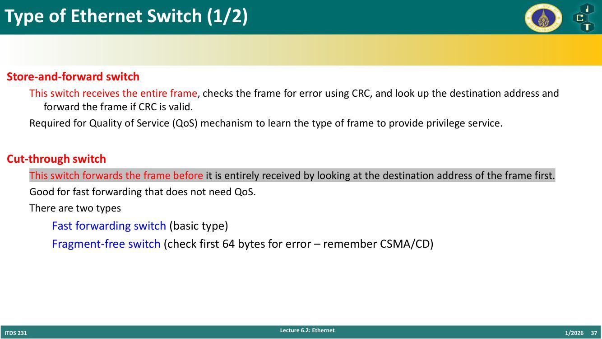
14.2 Auto-MDIX
- auto-MDIX = automatic medium-dependent interface crossover
- เมื่อเปิดใช้ (ค่าเริ่มต้นบน switch ที่ใช้ Cisco IOS Release 12.2(18)SE ขึ้นไป) switch ตรวจชนิดสายที่ต่ออัตโนมัติ และตั้งค่า interface ให้
- จึงใช้ สาย crossover หรือ straight-through ก็ได้ กับพอร์ต copper 10/100/1000 ไม่ว่าปลายอีกด้านเป็นอุปกรณ์อะไร
สายแบบดั้งเดิม (ในภาพ):
| การเชื่อมต่อ | สาย |
|---|---|
| switch – switch | crossover |
| switch – router | straight-through |
| switch – PC | straight-through |
| router – PC | crossover |
💡 หลักจำ: อุปกรณ์ชนิดเดียวกัน → crossover, ต่างชนิดกัน → straight-through (router กับ PC ถือเป็นกลุ่มเดียวกัน)
- ⚠️ Auto-MDIX ไม่ใช่ Autonegotiation
- Autonegotiation = ฟังก์ชัน optional บน switch และ NIC ส่วนใหญ่ ให้สองอุปกรณ์ ตกลงความเร็วและ duplex ที่ดีที่สุด อัตโนมัติ
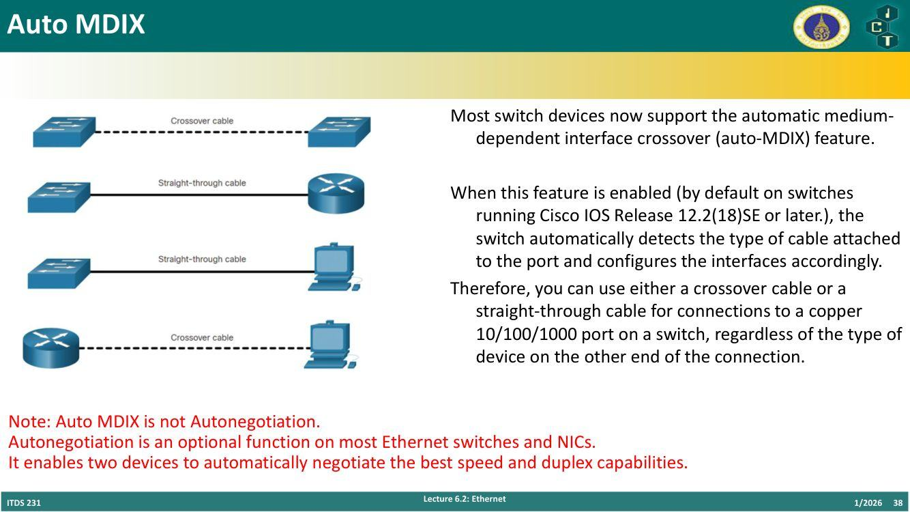
15. คำศัพท์สำคัญ
| คำศัพท์ | ความหมาย | จำง่าย ๆ ว่า |
|---|---|---|
| Ethernet | มาตรฐาน LAN ครอบคลุม data link + physical | IEEE 802.3 |
| De facto standard | มาตรฐานโดยพฤตินัย | |
| Xerox PARC / Robert Metcalfe / 3Com | ผู้ให้กำเนิด Ethernet | ALOHAnet เป็นแรงบันดาลใจ |
| DIX | DEC, Intel, Xerox | |
| 10BASE2 / 10BASE-T | thin coax / UTP | |
| IEEE Project 802 | รวมมาตรฐาน physical + data link ของ LAN | |
| LLC (802.2) | ไม่ใช่ส่วนของ Ethernet | |
| Standard / Fast / Gigabit / 10G Ethernet | 10 Mbps / 100 Mbps / 1 Gbps / 10 Gbps | |
| Connectionless | ไม่มีการสร้าง/ปิด connection | |
| CRC-32 | ตรวจ error ของ frame, ผิดทิ้งเงียบ | |
| Preamble | 7 bytes 0/1 สลับ, sync clock | physical layer |
| SFD | 1 byte 10101011, flag เริ่ม frame | โอกาส sync สุดท้าย |
| DA / SA | destination / source MAC 6 bytes | |
| Type | 2 bytes ระบุโปรโตคอลชั้นบน (IP, ARP, OSPF) | |
| Padding | เติม 0 ให้ data ถึง 46 bytes | |
| Min / Max frame | 64 / 1518 bytes | payload 46 / 1500 |
| NIC | การ์ดเครือข่าย ให้ MAC address | |
| MAC address | 48 bits ฐาน 16 คั่น colon | |
| OUI | 24 บิตแรก IEEE กำหนดให้ผู้ผลิต | |
| LSB first | ส่งบิตต่ำสุดของแต่ละไบต์ก่อน | รู้ unicast/multicast ก่อน |
| Unicast / Multicast / Broadcast | หลักที่ 2 คู่ / คี่ / FF ทั้งหมด | |
| IPv4 multicast | 224.0.0.0–239.255.255.255 | |
| IPv6 multicast | FF00::/8 | |
| IGMP | สมัครเข้า multicast group | |
| DHCP / ARP | ใช้ broadcast | |
| Default gateway | router ที่ส่งไปนอก LAN | dest MAC ของ router |
| 1-persistent CSMA/CD | วิธีเข้าถึงของ Standard Ethernet | |
| Collision domain | ขอบเขตที่เกิดการชนได้ | switch แยกต่อพอร์ต |
| Autonegotiation | ตกลงความเร็ว/duplex อัตโนมัติ | ≠ Auto-MDIX |
| IEEE 802.3z | Gigabit Ethernet | |
| Carrier Extension | min frame 512 bytes ใน Gigabit | |
| Frame Bursting | รวมหลาย frame เป็น frame ใหญ่ | |
| 8B/10B + NRZ / 4D-PAM5 | encoding ของ Gigabit | |
| MAC address table | ตาราง port ↔ MAC ของ switch | เก็บ 5 นาที |
| Frame filtering | ส่งออกเฉพาะพอร์ตที่ตรง | |
| Unknown unicast | ไม่รู้จัก dest → flood | |
| Store-and-forward | รับครบ ตรวจ CRC แล้วส่ง | รองรับ QoS |
| Cut-through | ดู dest แล้วส่งเลย | fast forwarding / fragment-free (64 bytes) |
| Auto-MDIX | ปรับตามชนิดสายอัตโนมัติ | crossover/straight-through ใช้ได้หมด |
16. สรุปท้ายบท / จุดที่มักออกสอบ
- Ethernet = IEEE 802.3 ครอบคลุม data link (MAC) + physical; LLC (802.2) ไม่ใช่ส่วนของ Ethernet
- ประวัติ: Xerox PARC 1973–74 (แรงบันดาลใจจาก ALOHAnet, Metcalfe), 3Com 1978, IEEE 802.3 ปี 1983, 10BASE-T ปี 1990, ชนะ Token Ring ตั้งแต่ 1995
- ทำไมชนะ: วิวัฒนาการความเร็วได้, มาตรฐานเปิด, ราคาถูก
- 4 รุ่น: Standard 10 Mbps (CSMA/CD), Fast 100 Mbps (CSMA/CD optional/hub), Gigabit 1 Gbps และ 10G (switch ไม่มี CSMA/CD); ปัจจุบันถึง 40/100 Gbps
- Ethernet connectionless, ไม่มี flow control, unreliable — มี CRC-32 แต่ผิดแล้ว ทิ้งเงียบ ให้ TCP ส่งใหม่ (UDP ต้องพึ่ง application)
- Frame: Preamble 7 | SFD 1 (10101011) | DA 6 | SA 6 | Type 2 | Data 46–1500 | CRC 4 — preamble/SFD เพิ่มที่ physical layer; CRC คำนวณจาก address, type, data
- Min frame 64 bytes (เพื่อ CSMA/CD) → payload ขั้นต่ำ 46; Max frame 1518 → payload 1500 (memory แพง + ไม่ให้ผูกขาดสื่อ)
- MAC 48 บิต: 24 บิตแรก OUI (IEEE), 24 บิตหลัง vendor; ซ้ำได้ (ผลิตผิด, VM)
- ส่ง LSB ก่อนในแต่ละไบต์ → รู้ unicast/multicast ทันที
- ชนิด MAC: หลักฐาน 16 ที่ 2 คู่ = unicast, คี่ = multicast, FF ทั้งหมด = broadcast (4A → unicast, 47 → multicast)
- บน shared medium: unicast/multicast/broadcast ทุกคนได้รับ ต่างกันที่ใครเก็บไว้
- Broadcast ใช้กับ DHCP, ARP; Multicast IPv4 224.0.0.0–239.255.255.255, IPv6 FF00::/8, ใช้เป็น destination เท่านั้น, IGMP
- MAC เปลี่ยนทุก hop, IP ไม่เปลี่ยน; ส่งไปต่างเครือข่าย → dest MAC = default gateway
- ทำไม 512 bits: 10 Mbps → 51.2 µs → ไปได้ 10,240 m (ไป-กลับ 5,120 m); ใช้จริงสายยาวสุด 2,500 m
- Switched Ethernet: collision domain แยกต่อพอร์ต, full-duplex ไม่ชน ไม่ใช้ CSMA/CD
- Fast Ethernet: hub → สายสั้นลงเหลือ 250 m (ใช้จริง 100 m); switch → ไม่ต้อง CSMA/CD; autonegotiation ใช้ความเร็วที่ช้ากว่า
- Gigabit (802.3z): min frame 512 bytes = Carrier Extension, Frame Bursting, ไม่มี hub; 1000Base-SX 550 m, LX 5000 m, CX 25 m, T4 100 m
- Switch learning: ดู source MAC → เพิ่ม/อัปเดตตาราง, เก็บ 5 นาที
- Switch forwarding: dest อยู่ในตาราง → filtering; ไม่อยู่ → unknown unicast flood; broadcast/multicast → flood (ยกเว้นพอร์ตขาเข้า)
- 1 พอร์ตมีหลาย MAC ได้ เมื่อต่อ switch กับ switch
- Store-and-forward (ตรวจ CRC, รองรับ QoS) vs cut-through (fast forwarding, fragment-free ตรวจ 64 bytes แรก)
- Auto-MDIX (ตรวจชนิดสาย) ≠ Autonegotiation (ตกลงความเร็วและ duplex)